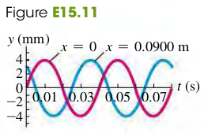

Waves on a string are transverse; during wave motion a particle with equilirum position x is displaced some distance y in the direction perpendicular to the x-axis. The value of y depends on which particle we are takling about (x), and also on the time t. Thus y is a function of both x and t.
y=y(x,t)
Wave Function for a Sinusoidal Wave
Suppose that the displacement of a particle at the left end of the string (x=0), where the wave originates, is given by
y(x=0,t)=Acos(ωt)=Acos(2πft)(15.2)
The wave disturbance traves from x=0 to some point x to the right of the origin in an mount of time given by vx, where v is the wave speed. So the motion of point x at time t is the same at the motion of point x=0 at the earlier time (t−vx). Hence we can find the displacement of point x at time t by simpley replacing t in Eq. (15.2) by (t−vx).
y(x,t)=Acos[ω(t−vx)]
Because cosθ=cos(−θ), we can rewrite the wave function as
y(x,t)=Acos[ω(vx−t)](15.3)
Express Eq. (15.3) in terms of period T=1/f and the wavenlength λ=v/f=ω2πv:
y(x,t)=Acos[2π(λx−Tt)](15.4)
Let k=λ2π (called wave number), we have λ=2πk. We can then rewrite Eq. (15.4) as
y(x,t)=Acos(kx−ωt)(15.7)
More on the Wave Function
For a wave travelling in the negative x-direction,
Particial Velocity and Acceleration in a Sinusoidal Wave
From the wave equation we can get an expression for the transverse velocity of any particle in a transverse wave. We can this vy to distinguish it from the wave propagation speed v. To find the transverse velocity vy at a particular point x, we take the derivative of wave function y(x,t) with respect to t, keeping x constant. If the wave function is
y(x,t)=Acos(kx−ωt)
then
vy(x,t)=∂t∂y(x,t)=ωAsin(kx−ωt)(15.9)
Equation (15.9) shows that the transverse velocity of a particle varies with time, as we expect for SHM. The maximum particle speed is ωA; this can be greater than, less, or equal to the wave speed v, depending on the amplitude and frequency of the wave.
The acceleration of any particle is the second partial derivative of y(x,t) with respect to t
We can also compute partial derivative of y(x,t) with respect to x, holding t constant. The first derivative ∂x∂y(x,t) is the slope of the string at point x and at time t. The second partial derivative with respect to x tells us the curvature of the string.
∂x2∂2y(x,y)=−k2Acos(kx−ωt)=−k2y(x,t)(15.11)
From Eqs. (15.10) and (15.11) and the relationship ω=vk we see that
∂2y(x,t)/∂x2∂2y(x,t)/∂t2=k2ω2=v2
and
∂x2∂2y(x,t)=v21∂t2∂2y(x,t)(15.12)
Exercises
7, 8, 9, 10, 11, 12
15.7 Transverse waves on a string have wave speed 8.00 m/s, amplitude 0.0700 m, and wavelength 0.320 m. The waves travel in the −x-direction, and at t = 0 the x = 0 end of the string has its maximum upward displacement.
(a) Find the frequency, period, and wave number of these waves.
(b) Write a wave function describing the wave.
(c) Find the transverse displacement of a particle at x=0.360 m at time t=0.150 s.
(d) How much time must elapse from the instant in part (c) until the particle at x = 0.360 m next has maximum upward displacement?
Solution
a. Frequency f=λv=0.328=25Hz
Period T=f1=0.04s
Wave number k=λ2π=0.322π=6.25π rad/m
b. Waven function. (negative x-axis)
The moment y has the maximum upward displacement after t=0.15s is when n=3, and the time elapsed is 0.005 s.
15.8 A certain transverse wave is described by
y(x,t)=(6.50 mm)cos2π(28.0 cmx−0.0360 st)
Determine the wave’s (a) amplitude; (b) wavelength; (c) frequency; (d) speed of propagation; (e) direction of propagation.
Solution
Amplitude, A=6.50 mm
Wavelength, λ=28.0 cm=0.28 m
Frequency, f=T1=0.036 s1=27.8 Hz
Speed of propagtion, v=λf=0.28×27.8=7.8 m/s
Direction of progation, positive x-direction.
15.9 CALC Which of the following wave functions satisfies the wave equation, Eq. (15.12)? (a) y(x,t)=Acos(kx+ωt); (b) y(x,t)=Asin(kx+ωt); (c) y(x,t)=A(coskx+cosωt). (d) For the wave of part (b), write the equations for the transverse velocity and transverse acceleration of a particle at point x.
15.10 A water wave traveling in a straight line on a lake is described by the equation
y(x,t)=(2.75 cm)cos(0.410 rad/cm x+6.20 rad/s t)
where y is the displacement perpendicular to the undisturbed surface of the lake.
(a) How much time does it take for one completewave pattern to go past a fisherman in a boat at anchor, and what horizontal distance does the wave crest travel in that time?
(b) What are the wave number and the number of waves per second that pass the fisherman?
(c) How fast does a wave crest travel past the fisherman, and what is the maximum speed of his cork floater as the wave causes it to bob up and down?
15.11 A sinusoidal wave is propagating along a stretched string that lies along the x-axis. The displacement of the string as a function of time is graphed in Fig. E15.11 for particles at x=0 and x=0.0900 m.
(a) What is the amplitude of the wave?
(b) What is the period of the wave?
(c) You are told that the two points x = 0 and x = 0.0900 m are within one wavelength of each other. If the wave is moving in the + xdirection, determine the wavelength and the wave speed.
(d) If instead the wave is moving in the - x-direction, determine the wavelength and the wave speed.
(e) Would it be possible to determine definitively the wavelengths in parts (c) and (d) if you were not told that the two points were within one wavelength of each other? Why or why not?

Solution
Amplitude A=4 mm, Period T=0.04s
c. When the wave travels in the positive x-axis, the time elasped from x=0 to x=0.09 is Δt=0.035−0.01=0.025s.
vλ=ΔtΔx=0.0250.09=3.6 m/s=vT=3.6×0.04=0.144 m
d. When the wave travels in the negative x-axis, the time elasped from x=0 to x=0.09 is Δt=0.05−0.035=0.015s.
vλ=ΔtΔx=0.0150.09=6 m/s=vT=6×0.04=0.24 m
e. It is impossible. The possibility of the number of waves between these two points is infinite.
15.12 CALC Speed of Propagation vs. Particle Speed.
(a) Show that Eq. (15.3) may be written as y(x,t)=Acos[λ2π(x−vt)].
(b) Use y(x,t) to find an expression for the transverse velocity vy of a particle in the string on which the wave travels.
(c) Find the maximum speed of a particle of the string. Under what circumstances is this equal to the propagation speed v? Less than v? Greater than v?